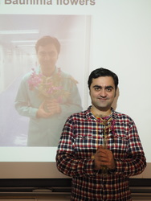

 Far outpacing Moore's law, the growth of genomics, sequencing the genetic code of all living organisms, is predicted to overtake the volumes of other major generators of large-scale data such as astronomy, streaming video, and social media. Much of this revolution has been driven in Hong Kong and just across the border in Shenzhen, but has gone under the radar here. The effects of this are already touching all our lives, and our health and wellbeing in the 21st century. To better equip the people of Hong Kong with the literacy and training to make informed decisions and work in this new genomic era we launched Bauhinia Genome, a grassroots, citizen science project using the crowdfunded sequencing of the genome of the Hong Kong emblem to better understand where it came from, and train local students to assemble and analyse the data. Crucial skills needed for this field to advance, as well as engage the public through local pride.
Speaker: Scott Edmunds is Executive Committee Member for Open Science at Open Data Hong Kong, and employed by the genomics organization BGI on publishing and data projects. As Executive Editor of Gigascience, the open and reproducible research journal based out of the BGI offices in Hong Kong, he works on data publishing and infrastructure. He is passionate about reproducible research, citizen science and open data, and involved in a number of open science projects such as the crowdsourcing of the deadly European 2011 E. coli outbreak, the Bauhinia Genome project, and Mosquito Alert.
Judging others' psychological traits is not only an essential skill in successful social living, but also an important factor in product development. Psychological traits are a key driver behind human interaction, behavior and emotions. Although accurate judgments stem from social-cognitive skills, developments in machine learning show that computer models can also make valid judgments. It is also possible that this technique can assist clinical diagnosis in the future.
Research by Lucia Chen (speaking), Tao Gong and Rob Davidson.
Event open to all. Bring drinks and snacks.
We will get together to watch and discuss the excellent lectures on quantum electrodynamics (QED) that Richard Feynman originally gave at the University of Auckland in 1979. QED is a strange, beautiful and fundamental theory from which many intuitive or extremely counter-intuitive predictions (e.g. quantum paradoxes) about light and matter can be made. Many have been verified experimentally with much precision. The lectures present the theory in a witty and accessible manner.
Event open to all. Bring drinks and snacks.
« The theory of quantum electrodynamics describes Nature as absurd from the point of view of common sense. And it agrees fully with experiment. So I hope you accept Nature as She is — absurd. » — Richard Feynman
The lab's address is:
M-Labs Limited
Workshop 15B 6/F Block B1
Yau Tong Industrial City
17 Ko Fai Rd
Yau Tong, Hong Kong
It is a short walk from the Yau Tong MTR station. Take exit A2. Viewed from the MTR exit, Yau Tong Industrial City is inside that building:

When entering from Ko Fai Road, get inside the courtyard, the entrance to Block B1 is in front of you on your left. Take the elevator or the stairs to the 6th floor.
|
M-Labs Limited |
Freenode #m-labs Developer mailing list GitHub: m-labs Twitter: @M_Labs_Ltd |